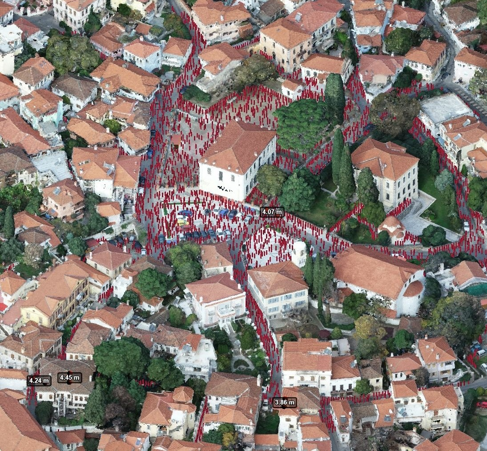
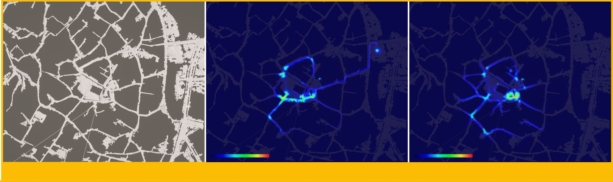

Large-Scale Simulation
Model sizeable agent populations in complex 3D environments, with repeated runs to compare crowd dynamics across scenarios.
Within the ARTEMIS project, the ArtCogS research team at ATHENA Research Centre develops a scalable Crowd Simulation Service based on its METIS multi-agent simulation technology. The service models pedestrian movement in 3D indoor and outdoor environments, enabling virtual experiments on visitor flows, congestion, evacuation and crowd-related risks.

METIS supports the simulation of heterogeneous virtual crowds within three-dimensional digital environments, from museum interiors and archaeological sites to public squares and historic city centres. The service is designed to examine how different crowd sizes, movement behaviours and spatial configurations affect pedestrian circulation.
Through configurable what-if scenarios, researchers and stakeholders can compare normal visiting conditions with more demanding situations, such as crowded events or emergency evacuation. In ARTEMIS, these simulations contribute to the wider Reactive Heritage Digital Twin workflow, supporting the study of visitor safety and potential risks to cultural heritage assets.
Model sizeable agent populations in complex 3D environments, with repeated runs to compare crowd dynamics across scenarios.
Configure multiple visitor groups with different starting locations, population sizes, behaviours and movement goals.
Use externally supplied Unity-based 3D scenes and define destinations, danger zones and static or dynamic obstacles.
Test alternative crowd densities, routes, barriers and evacuation configurations without intervening in the real site.
Produce time-stamped agent states, positions, movement information and group-level summaries for further analysis.
Exchange scenario configurations and simulation results through JSON and a REST API for integration with external systems.
METIS provides distinct behavioural modes to represent different ways people move through a virtual environment.
Agents navigate toward specified destinations using basic movement behaviour.
Groups follow predefined routes or a leader, representing organised tours and group visits.
Agents move more freely within the scene, representing independent visitors.
Agents move away from a configured danger zone toward a designated safe destination.
Select a 3D environment and define agent groups, behaviours, destinations, obstacles and repetitions.
Submit the scenario to the METIS-based service for multi-agent execution and data collection.
Examine trajectories and summary indicators, then compare simulation runs to assess alternative scenarios.
Simulation outputs support scenario assessment; they are not guaranteed predictions of real-world crowd behaviour.
METIS generates spatial and temporal simulation outputs that enable the analysis of crowd movement patterns, population distributions and congestion hotspots. These results support the comparison of alternative scenarios and the assessment of crowd dynamics in large-scale environments.

ARTEMIS provides an application context for METIS in cultural heritage settings. In particular, the Old Town of Xanthi offers a historic urban environment in which crowd simulation can explore pedestrian circulation across narrow streets, public squares and areas surrounding sensitive heritage assets.
Example scenarios include high visitor attendance during public events, route congestion, alternative pedestrian flows and emergency evacuation. The resulting data can help compare planning options and identify locations requiring closer attention.
Project: ARTEMIS — Applying Reactive Twins to Enhance Monument Information Systems
Duration: January 2025 – December 2027
Funding: Horizon Europe · Grant Agreement No. 101188009
ArtCogS role: METIS-based Crowd Simulation Service development at ATHENA Research Centre
Application: Large-scale crowd simulation for cultural heritage pilots and Digital Twins
Official ARTEMIS Website